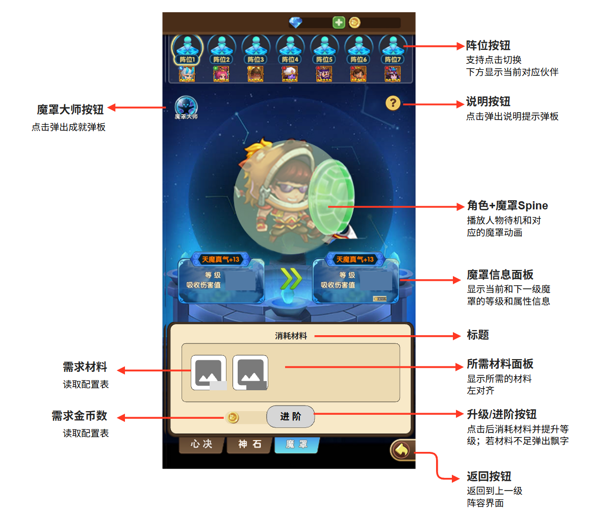
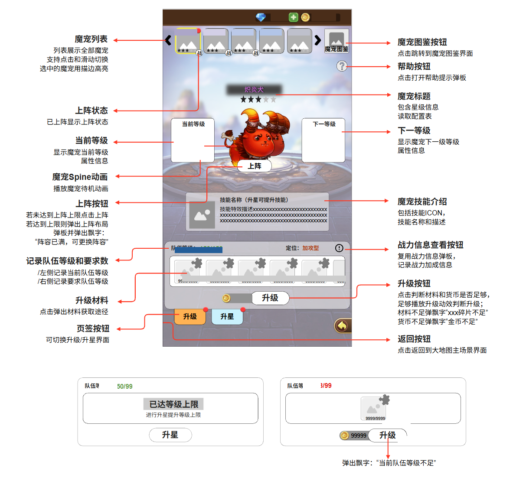
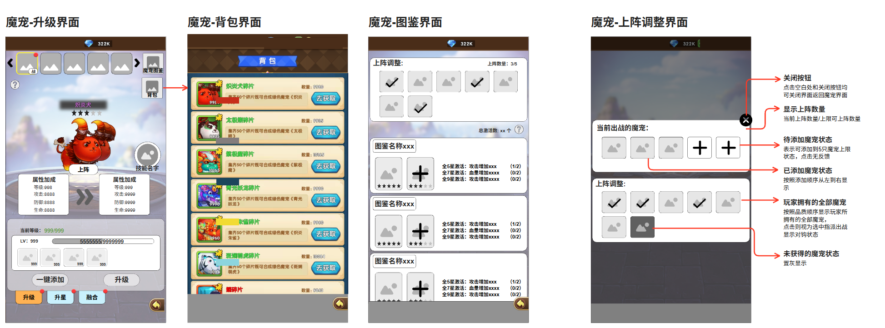
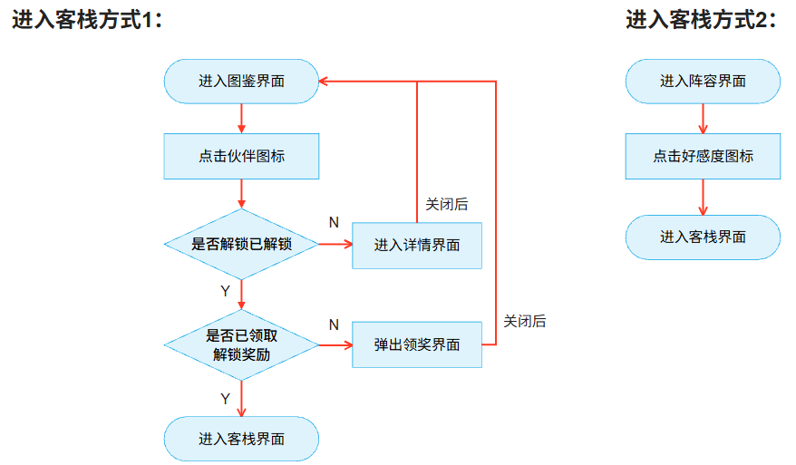

魔罩：成长条件与交互反馈
新增生存向培养线，并把提升条件转为可理解的界面反馈。

设计工作
新增生存向培养线，并把提升条件转为可理解的界面反馈。
文档产出
署名文档创建及材料途径修订记录支持本人方案产出；材料产出仍含待定项，不宣称最终投放或商业结果。
关键取舍
- 区分未解锁、可提升、材料不足和满级等状态。
- 对照当前与下级属性，材料入口连接获取途径。
- 红点从功能向阵容入口传递，并补齐引导、资源和埋点需求。
在页面内阅读魔罩：成长条件与交互反馈大图

AUTHORED DESIGN / 策划资料摘要
成长规则、战斗作用与界面交付。
GROWTH / BATTLE / UI·UE
从魔罩和魔宠培养，到阵容调整与客栈入口，展示玩家如何查看成长、调整出战组合并进入伙伴互动。
主策划任期为 2021.05—2022.07。《魔罩系统文档》和《魔宠系统文档（第2版）》正文均署名“文档撰写人：吴天昊”。配图保留团队历史设计稿中的界面、箭头和说明，部分示例数值已遮盖。
新增生存向培养线，并把提升条件转为可理解的界面反馈。
新增生存向培养线，并把提升条件转为可理解的界面反馈。
署名文档创建及材料途径修订记录支持本人方案产出；材料产出仍含待定项，不宣称最终投放或商业结果。

把收集、培养和战斗作用连接为长期目标。

把收集、培养和战斗作用连接为长期目标。
正文署名及第 2 版修订记录支持品质、战力与培养材料设计工作；不公开战力公式、技能参数或商业配置。

让培养成果进入阵容选择和战斗释放次序。

让培养成果进入阵容选择和战斗释放次序。
交付上阵调整规则、界面标注与战斗顺序说明；团队美术为历史参考，不归为本人绘制。

玩家查看阵容时可通过好感度图标直达客栈，浏览图鉴时则按伙伴状态引导下一步。

玩家查看阵容时可通过好感度图标直达客栈，浏览图鉴时则按伙伴状态引导下一步。
历史流程图记录两条进入路径及图鉴入口的状态分支。